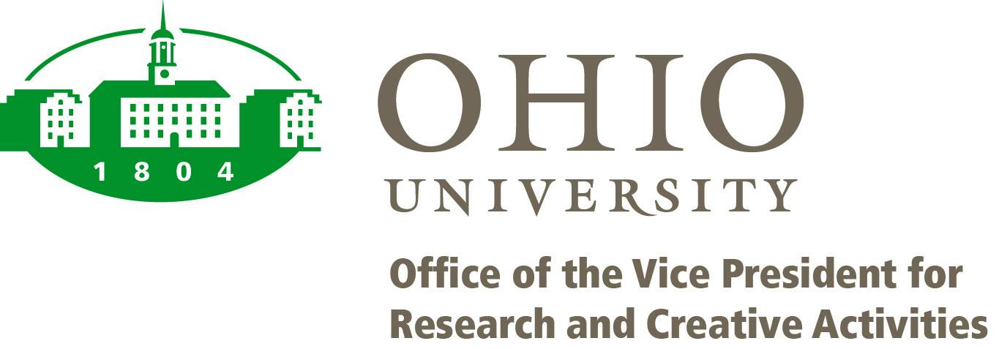

Fifth RECOMB Satellite Conference on Bioinformatics Education
(RECOMB-BE)
April 1, 2014
Pittsburgh Athletic Association
4215 5th Avenue
Pittsburgh, Pennsylvania, USA
OVERVIEW and GOALS
The Fifth Annual RECOMB Conference on Bioinformatics Education (RECOMB-BE) will be held in Pittsburgh, Pennsylvania, April 1, 2014. RECOMB-BE 2014 will focus on bioinformatics education for undergraduate and graduate students, with a special emphasis on students in the life sciences. The conference will consist of invited .keynote. presentations, oral and poster presentations selected from submitted abstracts, and discussion panels. RECOMB-BE will immediately precede the Eighteenth International Conference on Research in Computational Molecular Biology (RECOMB), which also will be held in Pittsburgh, April 2-5, 2014. Rapid advances in the life sciences and in related information technologies necessitate the ongoing refinement of bioinformatics education, training, and learning strategies in order to maintain their relevance and to enhance their effectiveness. In response to this need, RECOMB-BE 2014 will address best practices in teaching bioinformatics and computational biology to life science students.
PROGRAM
KEY DATES
Submission deadline: December 22, 2013Acceptance notification: February 1, 2014
RECOMB-BE: April 1, 2014
SUBMISSION
Abstracts are solicited in all areas of bioinformatics training, education, and learning. Topics of interest include, but are not limited to, the following:
Abstracts (up to 2 pages long) should be submitted to recombbe2014@gmail.com by December 22, 2013. Please indicate whether the abstract should be could be considered for:
1. A 15 minute talk;
2. A poster; or
3. May be considered for either a talk or a poster at the discretion of the conference committee.
Since the number of talks will be limited, submissions in categories 2 and 3 will have a better chance of being accepted than those submitted in category 1. Decisions will be announced by February 1, 2014.
KEYNOTE SPEAKERS
PANEL SESSION
"What should every undergraduate biology major know about bioinformatics and at what level of proficiency?"
STEERING COMMITTEE
Pavel Pevzner (UCSD)Ron Shamir (Tel Aviv University)
CONFERENCE COMMITTEE
ABOUT RECOMB
The RECOMB International Conference on Research in Computational Molecular Biology was founded in 1997 to provide a scientific forum for theoretical advances in computational biology and their applications in molecular biology and medicine. The conference arose from the need to advance research on the mathematical and computational side of molecular biology. The 18th Annual RECOMB conference (RECOMB 2014) will be held April 2-6, 2014 in Pittsburgh, Pennsylvania, USA.The RECOMB Satellite Series was founded by Pavel Pevzner in 2001. Today, it consists of eight focused meetings covering various specialized aspects of bioinformatics: RECOMB Comparative Genomics, RECOMB/ISCB Regulatory Genomics, RECOMB Computational Cancer Biology, RECOMB Computational Proteomics, RECOMB Systems Biology, RECOMB Massively Parallel Sequencing, RECOMB Algorithmic Biology, and, of course, RECOMB Bioinformatics Education. The RECOMB Bioinformatics Education Satellite Series was founded by Pavel Pevzner and Ron Shamir in 2009. Previous meetings took place in San Diego (2009 and 2010), Vienna (2011) and St. Petersburg (2012).
Sponsors
